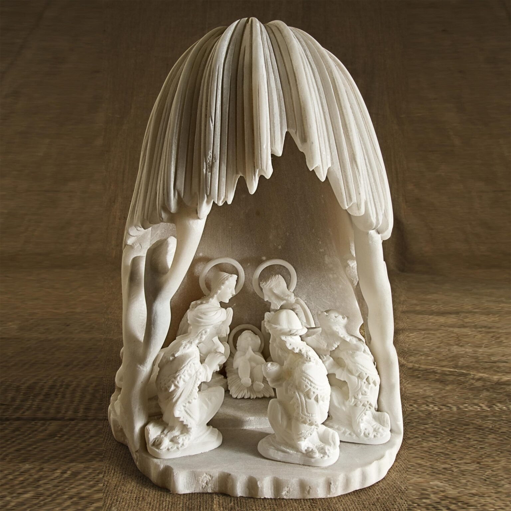

Pieza destacada
Piedra de Huamanga
Vinchos, Ayacucho
CNI-G05
Natividad Andina
Tallada en alabastro por el maestro Dionisio Rojas. Cuchillos, formones y tallador eléctrico dan un acabado fino a cada pieza; la obra se inspira en la vida del campesino andino y la alegría de la Navidad.
- Material
- Piedra de Huamanga (alabastro)
- Zona
- Vinchos, Ayacucho
- Técnica
- Talla a mano
- Medidas
- 61 cm alto · base 30 × 52 cm · 3,90 kg